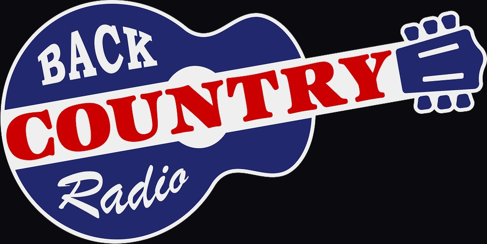
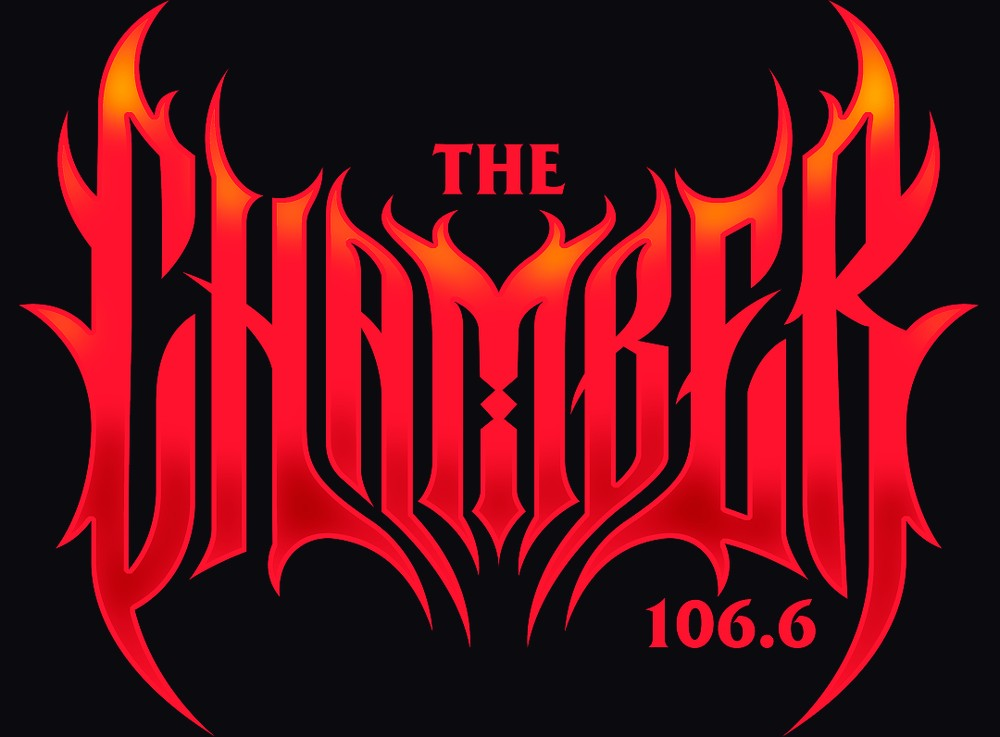
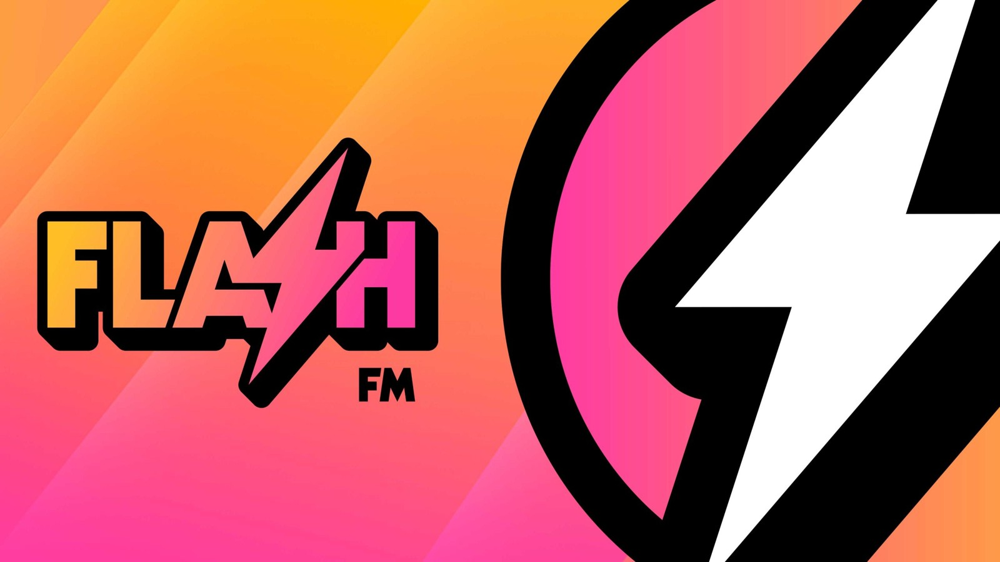
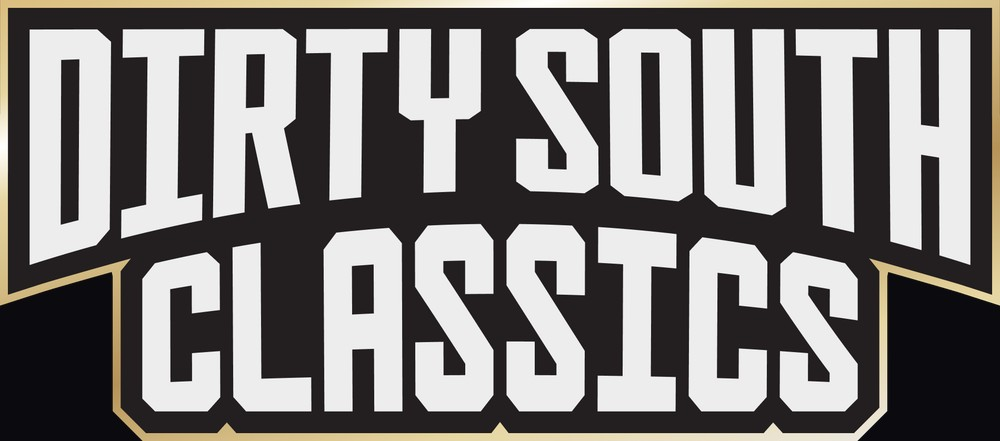

ACCUEIL / Musique
Sous-page · sourcée au 18 novembre 2026Musique & radio
Six stations de radio, l’album de 34 titres du 19 novembre et la partition de Justice.
Trois sources musicalesThree music sources
La musique de GTA VI se répartit en trois ensembles : la radio du jeu, l’album de chansons GTA VI: The Album (19 novembre) et la partition originale signée Justice (11 décembre).
Officiel Source : page musique de Rockstar Games.
Six stations dévoiléesSix stations revealed
Cocoteo FM
Latino moderne, avec El Martillo et La Gata.

Logo de la station, image du wiki gta.wikiBack Country
Country « prêt pour l’aéroglisseur », avec MW et Delta Dawne.
Afro Bank FM
Amapiano, classiques africains et 3-step, avec Burna et Palmsy.

Logo de la station, image du wiki gta.wikiThe Chamber
Metal, avec DJ Kerry et DJ Tom.

Logo de la station, publié par Rockstar Mag (presse)Flash FM
Pop, avec Robyn et Alex.

Logo de la station, image du wiki gta.wikiDirty South Classics
Rap et hip-hop du Sud, avec Trick et Trina.
Rockstar annonce une gamme plus large, du rock classique aux talk-shows, avec des podcasts à la demande. La liste complète n’est pas publiée.
GTA VI: The Album34 original tracks
34 titres originaux, sortie le 19 novembre 2026 en streaming, CD et vinyle. Dix singles sont annoncés sur la page officielle.
| # | Titre | Artiste |
|---|---|---|
| 01 | That's It (feat. Future & Metro Boomin) | Yung Lean |
| 02 | RHYNO | Travis Scott |
| 03 | Sexy Magic | CA7RIEL & Paco Amoroso, Pink Pantheress, Fred again.. & Etienne de Crécy |
| 04 | Flower in a Hurricane (feat. Tame Impala, SZA, King Gizzard & The Lizard Wizard) | Justice |
| 05 | Last Thing You Need | Morgan Wallen |
| 06 | Suzuki | Fuerza Regida |
| 07 | Macacoa 2000 | Rauw Alejandro |
| 08 | Don't Chart | Cardi B |
| 09 | Blood In Your Eyes | Tove Lo |
| 10 | Bright Lights, Big City | Keith Richards |
Officiel Les 24 autres titres ne sont pas listés sur la page officielle consultée.
Justice composeJustice composes
Original Score
Composée par le duo français Justice (Gaspard Augé et Xavier de Rosnay). Une partition « adaptative » qui s’ajuste à la manière dont vous jouez. 30 titres, sortie le 11 décembre 2026.
Singles
« Flower in a Hurricane » (présent sur les deux albums) et « Pusher » feat. Gesaffelstein, annoncés par Rockstar.
Les formats CD et vinyle de la partition sont proposés via les liens de pré-commande de Rockstar. Les 50 titres annoncés par certaines plateformes ne sont pas confirmés par Rockstar.
Écouter légalementListen legally
Passez par les liens officiels de Rockstar ou par les pages des artistes sur les plateformes de streaming. Évitez les mises en ligne non officielles, qui peuvent contenir des éléments de la partition ou des extraits piratés.